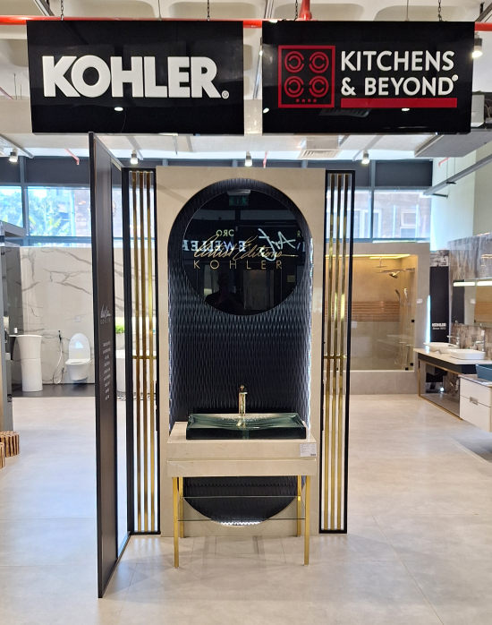

Designed
Luxury

Kitchens & Beyond: Your Premier Destination for Interior Excellence.
At Kitchens & Beyond, we are your ultimate "one-stop-shop" for all interior & exterior solutions, specializing in kitchens, wardrobes, sanitaryware, tiles, and innovative 3D design services.
Our commitment to detail, deep understanding of client needs, and unwavering dedication to our craft culminate in the creation of remarkable living spaces that inspire and elevate your lifestyle.
By partnering with premium brands from around the worldwide, we pride ourselves on delivering top-tier products at competitive prices without compromising on quality.
Our journey began over 13 years ago with the exceptional Italian kitchens from Snaidero, where we successfully catered to both residential and commercial clients, ensuring their utmost satisfaction.
To better meet the diverse needs of our clients, we have expanded our offerings to include an impressive range of products. This includes sanitaryware from Kohler and Bagnodesign, stylish wardrobes by Novamobili, stunning porcelain tiles from Caesar, and elegant vanities from Ideagroup and Azzura. Additionally, our 3Ddesign department is dedicated to bringing your visions to life, ensuring that your dream spaces become a reality.
As market leaders, we provide you with the knowledge you need and the quality products you deserve to craft stunning
spaces that reflect your individuality abd style.


1. Customer Service - Our customers are our most important shareholders and the lifeblood of our business.
2. Commitment - We follow through all our promises and are onlysatisfied when you are.
3. Team Work - We are commited to working together to get the job done.
4. Transparency - Our actions are characterized by intergrity, trust and respect.
5. Recognition - We take care of our team so they can take care of our customers.